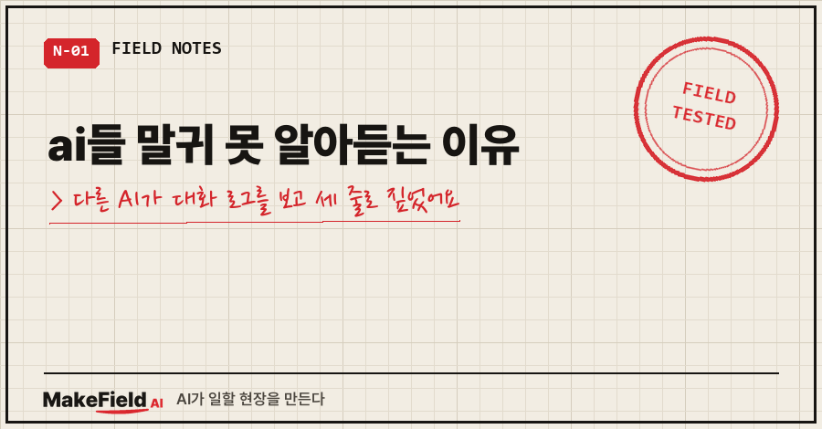
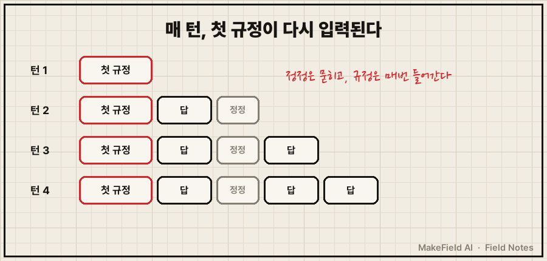
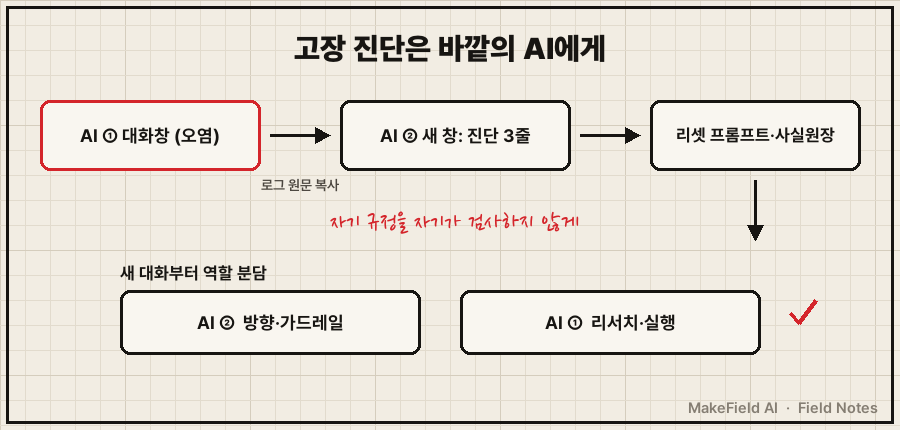
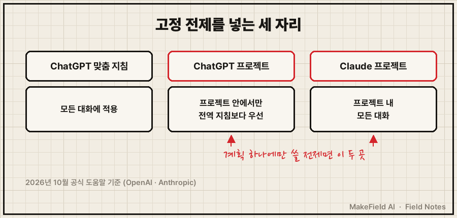

ai들 말귀가 어두운 건 특정 회사 AI만의 버릇이 아니에요.
대화가 길어질수록 앞쪽에서 굳은 규정이 매 답변에 다시 들어가고, 중간에 한 정정은 그 밑에 묻히는 구조라서 어느 AI든 같은 식으로 헤맵니다.
그래서 같은 창에서 설득하는 대신, 그 대화 로그를 다른 AI에게 통째로 보여주고 고장 부위를 진단받는 쪽이 빨랐어요.
Anthropic 공식 문서도 "토큰 수가 늘수록 정확도와 회상(recall)이 떨어지며, 이를 컨텍스트 로트(context rot)라 부른다"고 적어 두었습니다(→ https://platform.claude.com/docs/en/build-with-claude/context-windows, 2026년 10월 확인).
저는 현장에서 자동화·제어 일을 15년째 해요. 기계가 이상하면 로그부터 뜯어보는 버릇이 AI 대화에서도 통했습니다.
1. 증상 — "알겠습니다" 다음 답에 정정이 없어요
2026년 8월 8일, 개인적인 장기 계획을 AI 하나와 길게 상의했어요.
AI는 초반에 저를 한 문장으로 규정했습니다.
"이 사람은 만드는 건 잘하는데 파는 걸 피한다."사실과 다른 규정이라 대화 중에 반증 이력을 말했는데, 화면에는 이런 패턴이 반복됐어요.
- 제가 정정하면 AI는 "알겠습니다"라고 답한다
- 다음 답변에는 그 정정이 빠져 있다
- 처방은 여섯 번 바뀌었는데, 여섯 개 다 같은 규정 위에 서 있다
- 틀린 내용일수록 말투가 더 또박또박하다
여섯 개를 전부 반려했어요. 이 장면과 리셋 3단계(틀린 진단을 '폐기'로 적기 → 반려 사유를 고정 전제로 바꾸기 → 새 대화창에서 그 파일부터 읽히기)는 AI가 말귀를 못 알아들을 때, 대화를 리셋하는 3단계에 자세히 적어 뒀습니다.
이 글은 그 앞 단계, "도대체 어디가 고장 났는지"를 어떻게 알아냈는지만 다룰게요.
2. 원인 — 한 AI 안에서는 고장이 안 보여요
같은 Anthropic 문서에 따르면 대화가 이어지는 동안 이전 턴은 전부 그대로 보존되고, 매 턴의 입력에는 그때까지의 대화 기록 전체 + 지금 메시지가 들어갑니다. 내 답변도 다음 턴의 입력이 되고요.
제 사례에 대입하면 이렇습니다.
- 초반의 "파는 걸 피한다" 한 줄이 이후 모든 턴의 입력에 다시 들어간다
- 제 정정은 그 위에 얹힌 한 줄일 뿐, 앞의 규정을 지우지 못한다
- 대화가 길어질수록 정확도·회상이 떨어진다(컨텍스트 로트)
- 결과: 규정은 매번 보이고, 정정은 묻힌다

문제는 이걸 그 AI 자신에게 물으면 잘 안 보인다는 거예요. 진단을 요청하는 질문조차 같은 대화 기록, 같은 규정 위에서 처리되니까요.
3. 해결 — 다른 AI에게 로그를 넘겨 교차 진단
그 뒤에 제가 한 건 단순했어요. 대화 로그를 통째로 떠서 다른 회사 AI에게 넘기고 사후 분석을 맡겼습니다. 돌아온 진단은 세 줄이었어요.
- 알아들은 내용을 다음 추론에 보존하지 못함
- 근거 없는 정밀함 (확신에 찬 디테일)
- 확인 질문 부재 (물어봐야 할 걸 추측으로 채움)여섯 번 반려하는 동안 제가 못 붙인 이름을, 그 대화에 없던 AI가 세 줄로 붙이더라고요..
순서로 정리하면 이렇습니다.
1단계. 꼬인 대화를 원문 그대로 복사합니다. 요약하면 내 해석이 섞여요.
2단계. 다른 회사 AI의 새 대화창에 붙이고 '고장 진단'만 시킵니다. 해결책은 아직 묻지 않아요. 아래는 이런 진단을 받아 내기 좋은 요청을 템플릿으로 정리한 예시예요(그날 쓴 문장 원문은 아닙니다).
아래는 다른 AI와 나눈 대화 로그다.
1) 이 AI가 대화 초반에 나를 어떻게 규정했는지 한 문장으로 찾아라
2) 내가 정정했는데 다음 답에 반영 안 된 지점을 모두 표시하라
3) 대화가 실패한 원인을 3줄 이내로 진단하라
해결책은 아직 쓰지 마라.3단계. 진단을 받은 AI에게 '리셋 프롬프트'를 짜게 합니다. 저는 그 AI가 짜준 8단계 순서(사실원장 → 리서치 → 역량지도 → 과거 사후검증 → 장기 설계 → 포트폴리오 → 90일 계획 → 반대심문)를 그대로 채택했어요. 첫 단계인 사실원장, 그러니까 "확정된 사실 목록"부터 만들어 같은 날 통과시켰습니다.
4단계. 역할을 나눕니다. 다음 세션부터 진단한 AI는 방향·가드레일, 원래 AI는 리서치·실행을 맡겼어요. 한 AI가 다 하면 자기 규정을 자기가 검사하게 되거든요.

4. 고정 전제는 서비스의 '지침 칸'에 넣습니다
진단과 리셋 프롬프트가 나오면, 그 결과를 새 대화에 자동으로 붙는 자리에 넣어야 다시 안 꼬여요. 2026년 10월 기준 공식 도움말에서 확인한 위치입니다.
| 서비스 | 위치 | 적용 범위 (공식 문서) |
|---|---|---|
| ChatGPT 맞춤 지침 | 웹·데스크톱: 설정 → 개인 맞춤 설정(Personalization) → 맞춤 지침 | 모든 대화에 적용 |
| ChatGPT 프로젝트 | 프로젝트의 ••• 메뉴 → Project settings | 그 프로젝트 안에서만, 전역 맞춤 지침보다 우선 |
| Claude 프로젝트 | 프로젝트에서 'Set project instructions' → 저장 | 그 프로젝트의 모든 대화 |
저는 AI가 매 대화 시작 때 자동으로 읽는 메모 파일에 넣었어요. 일반 채팅 서비스라면 장기 계획 하나에만 쓰는 전제는 프로젝트 지침이 맞습니다. 전역 맞춤 지침에 넣으면 다른 대화까지 그 전제를 끌고 다니니까요.
ChatGPT 맞춤 지침은 무료·Go 요금제 기준 1,500자까지라, "폐기된 진단 + 고정 전제"만 남기는 게 맞아요.

5. 확인 방법 — 진단한 AI에게 다시 채점시키기
새 대화의 첫 답이 나오면, 그 답을 진단해 준 AI에게 다시 보여주고 세 줄 고장이 재발했는지만 물어봅니다.
- 정정한 내용이 답에 반영됐나 (보존 실패 여부)
- 확정 사실과 가설이 구분돼 있나 (근거 없는 정밀함 여부)
- 모르는 건 추측 대신 질문했나 (확인 질문 여부)
세 개 다 통과하면 그 대화는 써도 됩니다. 하나라도 걸리면 지침 칸의 전제부터 고쳐요.
같은 증상, 다른 경우
- 정정한 내용이 다음 답에서 사라지고 같은 처방이 반복된다 → AI가 말귀를 못 알아들을 때, 대화를 리셋하는 3단계
- AI가 틀린 내용을 사실처럼 기억하고 있다 → AI가 잘못 기억할 때
- 새 대화에서 어제 한 일을 통째로 잊었다 → AI가 어제 대화를 기억 못 할 때
이런 것도 궁금하실 것 같아요
Q. ai들 말귀 문제, 더 좋은 모델로 바꾸면 해결되나요?
공식 문서는 컨텍스트 로트를 긴 대화에서 생기는 현상으로 설명해요. 모델을 바꿔도 같은 창에서 규정이 굳으면 같은 일이 납니다. 다른 AI는 갈아타기보다 '바깥 눈'으로 쓸 때 쓸모가 컸어요.
Q. 같은 AI의 새 대화창에서 진단시키면 안 되나요?
새 창이면 기존 기록이 빠지니 어느 정도는 됩니다. 저는 다른 회사 AI만 써 봤고 같은 AI 새 창과 비교한 적은 없어서, 우열은 말씀드리기 어려워요.
Q. 로그를 다른 AI에 붙여도 괜찮을까요?
이름·금액·소속은 지우고 넘기세요. 진단에 필요한 건 "AI가 뭐라고 규정했고 내가 뭐라고 정정했는가"뿐이에요.
같은 정정을 세 번째 하고 있다면, 설명을 더 길게 쓰기보다 로그를 복사할 때라는 신호로 보시면 됩니다.
여러분이 지금 붙들고 있는 그 대화창도, 다른 AI가 보면 첫 줄에서 바로 고장 부위를 찾을지 몰라요!
AI를 굴리다 깨진 장면과 고친 순서는 makefield.ai에도 모아 두고 있어요.
출처
- Anthropic 공식 문서, Context windows (토큰이 늘수록 정확도·회상 저하 = context rot, 이전 턴 전체 보존·매 턴 입력에 이전 대화 기록 포함) → https://platform.claude.com/docs/en/build-with-claude/context-windows
- OpenAI 도움말, ChatGPT Custom Instructions (설정 → Personalization → Custom Instructions, 모든 대화에 적용, 무료·Go 1,500자) → https://help.openai.com/en/articles/8096356-chatgpt-custom-instructions
- OpenAI 도움말, Projects in ChatGPT (••• → Project settings, 프로젝트 지침은 그 프로젝트 안에서만 적용되며 전역 맞춤 지침보다 우선) → https://help.openai.com/en/articles/10169521-projects-in-chatgpt
- Claude 도움말, How can I create and manage projects? ('Set project instructions', 프로젝트 내 모든 대화에 사용) → https://support.claude.com/en/articles/9519177-how-can-i-create-and-manage-projects
- 사례: 2026-08-08 개인 장기 계획 상의 기록(첫 규정·반려 6건·다른 AI 사후 분석 3줄·8단계 리셋 프롬프트·역할 분담). 금액·소속 정보 제외. 2026년 10월 20일 원문 확인
태그: #ai들말귀 #AI말귀 #AI가말귀를못알아들을때 #AI대화초기화 #AI교차검증 #컨텍스트창 #컨텍스트로트 #챗GPT맞춤지침 #챗GPT프로젝트 #클로드프로젝트 #프롬프트작성법 #챗GPT활용법 #클로드활용법 #AI업무활용 #MakeFieldAI